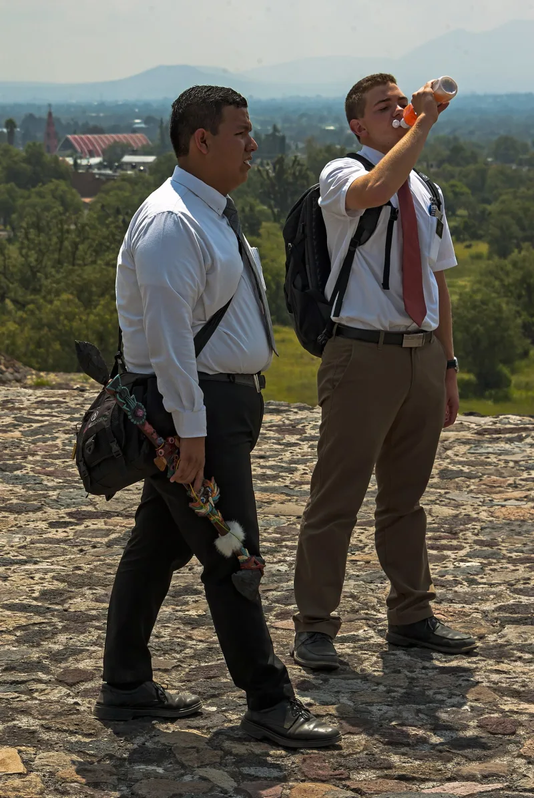

Missionaries pay $500 a month to serve
AdmittedTheir own church publications admit these facts. You can make this point from LDS sources alone.
How the programme works
Men go at 18 for 24 months. Women go at 19 for 18 months.
They work full-time and unpaid, and they pay to do it — a flat $500 a month since 2020, usually funded by the family.
How the days are governed
Mission rules and a mission president set the schedule, the media allowed, and the rule that a companion is always present. Until February 2019, contact with family was weekly email plus two phone calls a year: Mother's Day and Christmas.
The pressure around it
Cultural and family expectation to serve is strong. So is the stigma of coming home early.
That is widely described by members themselves.
Their answer, at full strength
Service is voluntary, and it is framed as consecration rather than labour. The flat payment equalises it: a missionary in Tokyo pays what one in Peru pays, and ward funds cover those who cannot.
Enormous numbers of returned missionaries call it the formative experience of their lives — a language, a discipline, a habit of service. The structure exists for safety and focus, as in monastic and military life.
And the 2019 changes, with weekly calls and more flexible days, show the institution listening.
How strong is this argument?
They admit all of it; every element comes from the church's own publications. The steelman is real too.
It is voluntary, and the benefits people report are genuine. Calling it unpaid labour understates how much people choose it.
This one is low stakes — mention it, do not press it.
What to say
"How often could you call home on your mission?"


How they answer this — at its strongest
Service is freely chosen, and the flat $500 keeps Tokyo and Peru the same.
Service is freely chosen, and it is framed as consecrated service rather than work.
The flat payment levels it out. A missionary in Tokyo pays what one in Peru pays, and ward funds cover those who cannot.
Huge numbers of returned missionaries call it the making of them. A language learned. A habit of discipline. A life turned toward service.
The rules exist for safety and focus, as they do in monastic and military life. And the 2019 changes, with weekly calls and looser schedules, show the church listening to how missionaries fare.
The verdict
They admit it all, and it is low stakes: mention it, do not press it.
Every element comes from the church's own publications. The $500 a month since 2020. The rules. And the two calls a year before February 2019.
Their case is real too. It is freely chosen, and the benefits people report are genuine. Calling it unpaid labour understates how much people want to go.
But the claim describes facts the church itself confirms. The severity is low because the practice is open, and consented to.
Sources
- Church News: First Presidency announces increase in missionary contribution (2019)
- NBC News: Mormons allow missionaries to call home weekly (2019)